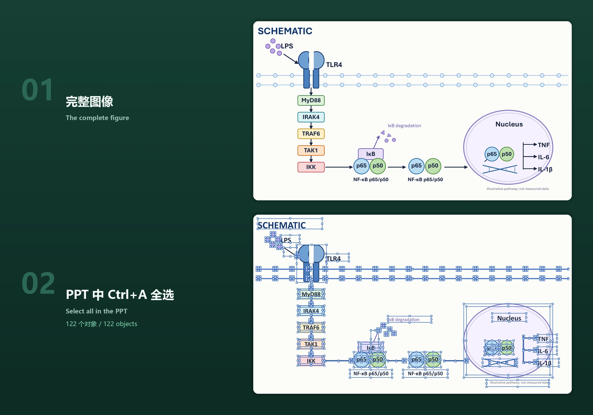

Literature, argument, full text, scientific figures, citation checks, and layout, all in one task, down to editable Word / LaTeX sources and a PDF. Research materials stay local; claims, citations, and figures rest on real evidence.
Local research materialsWeb text and figure previewsHuman scientific decisions
Sixty seconds through the whole path: literature, argument, full text, scientific figures, citation checks, review edits, and layout, ending in editable Word / LaTeX sources and a PDF. Chinese narration with sentence-by-sentence subtitles.
PaperSpine5 · 60-second release film · Chinese narration1920 × 1080 · MP4 · Subtitled · Download SRT
01 / Install
Get the environment set up, then start writing.
Downloading, checksum verification, extraction, host detection, and the startup self-check can all be handed to an AI. The download buttons and the version numbers on this page come straight from the published release list, so what you see is what you download.
Prerelease · version and downloads in sync
0.4.0-alpha.3 has no independent cryptographic signature. Verify SHA-256 before installation. Each Skill invocation checks for updates and upgrades when needed; an explicit opt-out is respected.
AI install / zero → working setup
Hand this to your AI.
Loading release list
For a first installation, choose the full suite for Windows x64, Linux x86_64, Apple Silicon, or Intel Mac. Each includes the runtime, web workspace, and update/rollback. The installer verifies bytes and SHA-256 before installation and preserves paper task data.
This release has no separate Skill-only download. The historical 0.70 MB ZIP lacks the Web core and runtime. Choose the matching full platform suite above and retain the same profile for existing papers.
First installation? Choose a platform suite above (26–56 MB). It includes the runtime and Web workspace.
AI install / verified V5
Download PaperSpine5 V5 from the published release list. Compare SHA-256 first; before installation archive known V3/V4 Skills under ~/.paperspine5/backups without deleting task data or settings. On Windows x64 run: powershell -ExecutionPolicy Bypass -File .\install.ps1 -Target codex -CleanLegacy. Run the startup health check, restart the host, and confirm paper-spine discovery.
Show platforms and boundaries Expand
WINDOWS SUITE
about 26.46 MB · x64
LINUX SUITE
about 56.22 MB · glibc x86_64
MAC SUITES
about 40.55–40.57 MB · separate arm64 / x86_64
Download failing? Start here Expand
TYPICAL ERROR
SEC_E_NO_CREDENTIALS / Could not create SSL/TLS secure channel
Check the proxy first: netsh winhttp show proxy. The manifest is mirrored on the website; the suite ZIPs are only on GitHub Releases. Download them on a machine that can reach GitHub and copy them over — the installer still verifies byte count and SHA-256. See INSTALL.md.
02
The workspace
One task. Five stages.
The page shows how far you have got and what is still waiting on you. The real state lives in project files, so a new session, a revision, or a transfer to another journal picks up where you left off instead of starting over.
Real UI / figure review stageAwaiting figure confirmation · two per-figure candidates
03 / Why PaperSpine5?
A paper is not a one-shot generation.
The hard part is not writing one more paragraph. It is keeping claims, evidence, figures, author decisions, and submission requirements consistent through round after round of revision.
01 / Files first
Look at the files, then talk conclusions
Configuration, evidence, figure decisions, the manuscript, and delivery checklists each have a clear home. The page is a working surface; the memory does not live only in a chat.
02 / You confirm
Ask first before anything goes out
Contribution, motivation, complete figures, author declarations, and submission authorization are never treated as approved just because an agent can do them.
03 / Pick up again
Restore before redoing
All five stages share one project state. A new session, a revision, or a transfer never has to guess what was already decided.
04 / From setup to submission
From setup to submission, one step at a time.
Each step says what it produces, what is waiting on your confirmation, and what the next step builds on.
01
CONFIGURE
Configuration
Define the task, materials, language, citations, figure route, and delivery preferences.
02
ANCHOR
Paper positioning
You confirm the contribution and the motivation, and those shape the claims and results that follow.
03
FIGURE
Scientific figures
FigMirror builds complete candidate figures; you review them one by one and every adopt-or-change call is recorded.
04
CANONICAL
Manuscript
The text actually uses the approved figures; at the end the rendered pages and the five checks are verified.
05
PUBLICATION
Submission cycle
Prepare submission materials, revisions, and transfer plans locally. There is no auto-submit button.
05 / What do you get?
The deliverable is not one lonely file.
Every artifact shows where it came from, what was confirmed, and how it will be used next.
01 / CANONICAL
Manuscript
Claims, references, and approved figures stay consistent before LaTeX, PDF, or Word output.
LaTeX · PDF · Word02 / FIGURE
Scientific figures
Candidate figures, review records, source files, and inputs stay together.
PPTX · SVG · PNG03 / TARGET
Submission package
Formatting, declarations, and checklists are organised for the target journal. Prepared never means submitted.
Checklist · Cover · Source04 / CYCLE
Revision and transfer
Reviews and new targets build on the existing project state, with decisions kept in files instead of scattered through chat.
Response · Diff · Transfer
Figure flow
Paper claim → generate candidates → complete-figure review → use in the text → final pages
Scientific figures carry arguments. The editable PPTX reconstruction route follows the public approach of Charlo-O's img2ppt Skill ↗; PaperSpine5 remains responsible for its own implementation, tests, and scientific checks.

Figures are not pasted screenshots. What you get are editable PPTX files: press Ctrl+A on this example in PowerPoint and 122 native objects are selected; text, arrows, and data curves all stay editable.
04
06 / The full suite is the default
Install the full suite by default. The workflow stays the same.
The full suite ships separately for Windows x64, Linux x86_64, macOS arm64, and macOS x86_64, each with its own runtime, web workspace, and update/rollback; it is the default entry. The historical Skill-only archive lacked the Web core and runtime and is not a current download. All four suites use the same V5 method.
Advanced / manual install explains verification and updating existing tasks.
07
Community atlas
A real community atlas, kept apart from product metrics.
The view below comes from the repository's existing GitHub Stargazer fetch and processing pipeline. It shows public community distribution, not installs, active users, papers, product capabilities, or institutional adoption.
These numbers do not add up into one. Each is verified on its own.
318
Public tests
Latest unit-test run on the public source
4
Release ZIPs
Four complete platform suites
4
Host integrations
Claude · Codex · OpenClaw · Hermes
1
Skill entry
Only one paper-spine
ScientificVisualCitationMetadataPortable
09 / Release notes and limits
Publicly verifiable. Still an alpha prerelease.
Four full-suite ZIPs are checked against the published manifest and SHA-256. The Windows alpha.2 updater to alpha.3, embedded Python startup, and task retention passed local tests. Post-release native CI passed old-updater upgrades and workspace startup on all four platforms. The macOS packages remain unsigned and unnotarized; invocation checks for updates, with explicit opt-out.
Buildw7a-81c3d2f2bbf6604b5412 · Windows suite
Updatesinvocation check + rollback-safe update
Host self-checkpost-release native CI passed on all four platforms
External submissionnever authorized by this release
PaperSpine5 · 0.4.0-alpha.3
Do not ask an agent to believe a paper for you. Let every step leave a record you can check.
Not only. It is a paper-writing workflow built around local files, installed as a Skill or plugin, with a five-stage web interface.
02Are the platform suites separate products?
No. They are runtime packages split by platform: Windows, Linux, Apple Silicon, and Intel Mac. This release only offers full suites; each installs the same paper-spine entry.
03Will it submit a paper automatically?
No. External submission, author declarations, fees, and licences always need your explicit authorization. Prepared is not submitted.
04Does the community atlas represent installs?
No. It only reflects aggregated public GitHub Stargazer Atlas data, which is a different thing from installs, active users, and product capability.
THANK YOU / PAPERSPINE5
Thank you for your support.
Thank you. It goes towards PaperSpine5 maintenance and documentation.